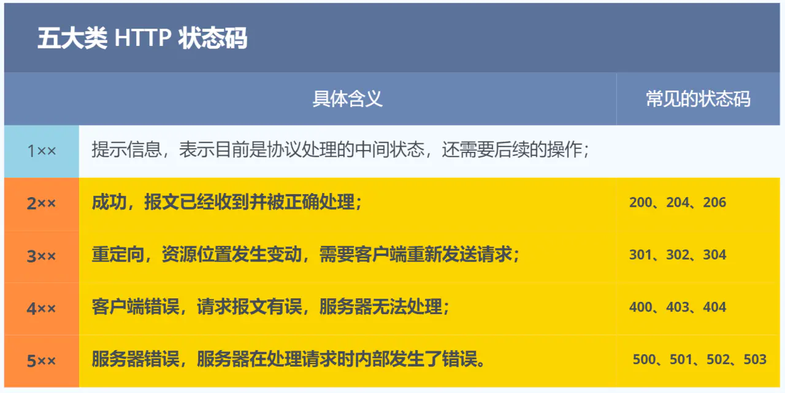

SpringBoot接口返回结果及异常统一处理
现如今前后端分离已经是项目开发的主流方式，在前后端分离开发情形下，少不了前端和后端之间的友好交流，为了避免上升为物理交流，项目中必须要有一套规范有效的前后端协议格式。

后端开发的不同服务、不同业务处理并返回不同类型的数据，这不仅会增加巨大工作量来进行协议的输出，数据格式的多样化对于前端同事来讲也是一个灾难，这就需要对后端服务接口的返回格式定义成统一规范的结果类型。所以，前后端开发过程中数据交互规范化是一件非常重要的事情，不仅可以减少前后端交互过程中出现的问题，也让代码逻辑更加具有条理。
因此，在项目的开始，需要对进行返回结果封装及异常统一处理，虽说封不封装都能用，但是项目前后端分离，规范的数据传输格式，让REST风格的API具有简单、易读、易用的特点。
一、统一接口返回结果
前端接口请求后台端，后端将返回结果统一封装。提高交互的规范性及通用性，也提高了前后端联调效率。前端根据规范格式返回结构体进行统一映射处理，就避免一个接口一个返回格式的问题。
1.统一封装结果包含如下参数
对于后端的返回数据，考虑将格式统一后返回，在开发大量后端服务接口之后，根据开发经验可以总结得到，请求一个接口时需要关注的指标有：
- 响应状态码，即请求接口返回状态码，如 HTTP 请求中的 200、304、500 等状态
- 响应结果描述，有些接口请求成功或失败需要返回描述信息供前端展示
- 响应结果数据，大部分的接口都会返回后端获取的数据，并以列表的形式展示的前端页面中
- 是否成功：在实际项目中请求接口时，首先要关注的应该是接口的请求是否成功，然后才会去关注成功返回数据或者错误代码和信息，在统一数据中可以加入请求是否成功的标识，当然接口的成功与否也可以根据状态码可以判断，可以根据实际需求考虑是否定义结果状态
- 其他标识：为了显示更多接口调用的信息，可能会根据实际的业务需求加入接口调用的时间信息等。
1 | private boolean code; //编码：true成功，false为失败 |
2.统一封装结果包含如下方法
除了以上属性特征外，返回结果类在定义时还应该满足：
- 属性私有化，使用 get/set 方法来操作属性值
- 构造器私有化，外部只可以调用方法，初始化要在类内部完成
- 由于外部需要直接调用方法，因此方法要定义为静态方法
结合以上，要求给出代码；
3、代码实现
1 | import lombok.Data; |
4、参数参考：
- 状态码：code
- 状态信息：status
- 返回信息：message
- 数据：data
5、方法参考：
- 全参数方法
- 成功返回（无参）
- 成功返回（枚举）
- 成功返回（状态码+返回信息）
- 成功返回（返回信息 + 数据）
- 成功返回（状态码+返回信息+数据）
- 成功返回（数据）
- 成功返回（返回信息）
- 失败返回（无参）
- 失败返回（枚举）
- 失败返回（状态码+返回信息）
- 失败返回（返回信息+数据）
- 失败返回（状态码+返回信息+数据）
- 失败返回（数据）
- 失败返回（返回信息）
5、状态码参考：
了用以下为HTTP状态码：
1xx 类状态码属于提示信息，是协议处理中的一种中间状态，实际用到的比较少。
2xx 类状态码表示服务器成功处理了客户端的请求，也是我们最愿意看到的状态。
- 「200 OK」是最常见的成功状态码，表示一切正常。如果是非
HEAD请求，服务器返回的响应头都会有 body 数据。 - 「204 No Content」也是常见的成功状态码，与 200 OK 基本相同，但响应头没有 body 数据。
- 「206 Partial Content」是应用于 HTTP 分块下载或断点续传，表示响应返回的 body 数据并不是资源的全部，而是其中的一部分，也是服务器处理成功的状态。
3xx 类状态码表示客户端请求的资源发生了变动，需要客户端用新的 URL 重新发送请求获取资源，也就是重定向。
- 「301 Moved Permanently」表示永久重定向，说明请求的资源已经不存在了，需改用新的 URL 再次访问。
- 「302 Found」表示临时重定向，说明请求的资源还在，但暂时需要用另一个 URL 来访问。
301 和 302 都会在响应头里使用字段 Location，指明后续要跳转的 URL，浏览器会自动重定向新的 URL。
- 「304 Not Modified」不具有跳转的含义，表示资源未修改，重定向已存在的缓冲文件，也称缓存重定向，也就是告诉客户端可以继续使用缓存资源，用于缓存控制。
4xx 类状态码表示客户端发送的报文有误，服务器无法处理，也就是错误码的含义。
- 「400 Bad Request」表示客户端请求的报文有错误，但只是个笼统的错误。
- 「403 Forbidden」表示服务器禁止访问资源，并不是客户端的请求出错。
- 「404 Not Found」表示请求的资源在服务器上不存在或未找到，所以无法提供给客户端。
5xx 类状态码表示客户端请求报文正确，但是服务器处理时内部发生了错误，属于服务器端的错误码。
- 「500 Internal Server Error」与 400 类型，是个笼统通用的错误码，服务器发生了什么错误，我们并不知道。
- 「501 Not Implemented」表示客户端请求的功能还不支持，类似“即将开业，敬请期待”的意思。
- 「502 Bad Gateway」通常是服务器作为网关或代理时返回的错误码，表示服务器自身工作正常，访问后端服务器发生了错误。
- 「503 Service Unavailable」表示服务器当前很忙，暂时无法响应客户端，类似“网络服务正忙，请稍后重试”的意思。
二、配置全局异常处理
在使用上方统一返回结果的加持下，规范的同时也不可避免程序异常情况。在日常项目开发中，异常是常见的，但是如何更高效的处理好异常信息，让我们能快速定位到BUG，是很重要的，不仅能够提高我们的开发效率，还能让你代码看上去更舒服，SpringBoot的项目已经对有一定的异常处理了，但是对于我们开发者而言可能就不太合适了，因此我们需要对这些异常进行统一的捕获并处理。

SpringBoot中，@RestControllAdvice即可开启全局异常处理，使用该注解表示开启了全局异常的捕获，我们只需在自定义一个方法使用@ExceptionHandler注解然后定义捕获异常的类型即可对这些捕获的异常进行统一的处理。
1.全局异常处理注解
@RestControllerAdvice
@RestControllerAdvice什么是？
@RestControllerAdvice注解是Spring MVC和Spring Boot应用程序中用于定义全局异常处理类的注解，它是@ControllerAdvice注解的特殊版本，是一个组合注解，由@ControllerAdvice、@ResponseBody组成。@ControllerAdvice继承了@Component，因此@RestControllerAdvice本质上是个组件，用于定义@ExceptionHandler，@InitBinder和@ModelAttribute方法，适用于所有使用@RequestMapping方法。
@RestControllerAdvice有什么特点？
- 注解
@RestControllerAdvice的类的方法可以使用@ExceptionHandler、@InitBinder、@ModelAttribute注解到方法上。 @RestControllerAdvice注解将作用于所有注解了@RequestMapping的控制器的方法上。@ExceptionHandler：用于指定异常处理方法，与@RestControllerAdvice配合使用时，用于全局处理控制器里的异常。@InitBinder：用来设置WebDataBinder，用于自动绑定前台请求参数到Model中。@ModelAttribute：本来作用是绑定键值对到Model中，当与@ControllerAdvice配合使用时，可以让全局的@RequestMapping都能获得在此处设置的键值对
2.@ExceptionHandler常用异常拦截
- 权限校验异常：AccessDeniedException（spring-security中异常）
- 请求方式不支持：HttpRequestMethodNotSupportedException
- 业务异常：ServiceException（自己业务定义异常）
- 拦截未知的运行时异常：RuntimeException
- 系统异常：Exception
- 自定义验证异常：BindException
- 自定义验证异常：MethodArgumentNotValidException
3.代码实现
1 | import lombok.extern.slf4j.Slf4j; |
4.接口调试

三、总结
本文从统一接口返回结果和配置全局异常处理两个方面出发，介绍如何优雅的封装规范后端接口输出，通过规范的数据传输格式，让REST风格的API具有简单、易读、易用详细；同时通过@RestControllerAdvice和@ExceptionHandler注解及使用方式，能够减少代码的重复度和复杂度，有利于代码的维护，并且能够快速定位到BUG，大大提高我们的开发效率。